Parcial #2 - Desarrollo de Videojuegos
Bienvenid@s a mi primera página web
Proyectos destacados
Proyecto 1: Plataforma 2D con físicas avanzadas.

Disponible en las plataformas: PS4, Nintendo Switch, Xbox One, PC (Steam/Epic Games Store).
Celeste es un juego indie de plataformas 2D que destaca por su jugabilidad precisa y el uso avanzado de físicas. El jugador controla a Madeline mientras escala una montaña llena de obstáculos desafiantes, donde cada movimiento, salto y caída están gobernados por mecánicas de físicas realistas que añaden profundidad al desafío. El diseño de niveles es meticulosamente elaborado, introduciendo nuevas mecánicas y aumentando gradualmente la dificultad, todo sin sentirse injusto. Además, el juego combina hábilmente una narrativa emocional con su jugabilidad, ofreciendo una experiencia inmersiva tanto a nivel mecánico como narrativo.
Proyecto 2: Juego de aventuras en un mundo abierto.

Disponible en las plataformas (a partir del 31 de octubre de 2024): PS5, PC (Steam/Epic Games Store).
Horizon: Zero Dawn - Remastered es una versión mejorada del aclamado juego de mundo abierto que sigue a Aloy en su lucha por sobrevivir en un futuro postapocalíptico dominado por máquinas robóticas. Esta remasterización optimiza la calidad visual, ofreciendo gráficos más detallados y un rendimiento superior, lo que enriquece la exploración y el combate en su vasto y dinámico entorno. Con mejoras en texturas, iluminación y animaciones, la experiencia inmersiva del original se eleva, haciendo de esta versión una actualización esencial para los fanáticos de la saga y los nuevos jugadores.
Proyecto 3: Juego de puzzle basado en inteligencia artificial.
Disponible en las plataformas: PS4, Xbox One, PC (Steam/Epic Games Store).
The Witness es un juego de puzzles en primera persona que desafía al jugador a explorar una misteriosa isla llena de acertijos interconectados. Desarrollado por Jonathan Blow, el juego se destaca por su enfoque en la observación, el aprendizaje implícito y la lógica, donde los jugadores deben descubrir las reglas de cada puzzle por sí mismos. Sin instrucciones directas, el juego fomenta el descubrimiento y la resolución de problemas a través de la exploración, ofreciendo una experiencia inmersiva que recompensa la paciencia y la atención al detalle.